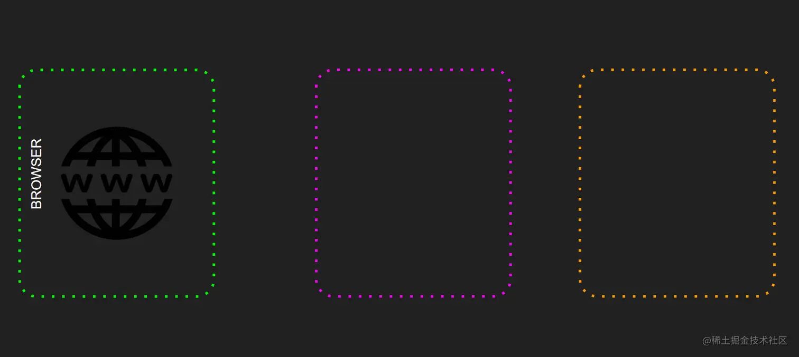

service worker 是现代 web 开发的关键部分，在最近几年获得了关注，这都要归功于 PWA（渐进式 Web 应用程序） 的流行。service worker 通过向典型的 Web 应用程序添加后台同步、离线渲染和推送通知等功能，缩小了本机应用程序和 Web 应用程序之间的差距，主要任务之一是充当代理。
基本概念
service worker 本质上是浏览器在后台运行的脚本，它是完全独立于它正在处理或服务的网页。它们充当了 web 应用程序、浏览器和网络之间的代理服务器。service worker 赋予 Web 应用程序像原生应用程序一样工作的能力。
了解了什么是service worker ，现在来看下service worker 有什么特征：
- 它们不能直接访问 DOM，使用一种通过
postMessage接口发送的消息机制来响应 - 不使用时终止，这意味着它们是事件驱动的
- 使用 ES6 承诺机制
- 使用
service worker，则需要 HTTPS 的支持，如果在本地主机上可以在没有 HTTPS 支持的情况下使用它们。然而，如果上传到远程服务器，将需要 HTTPS 的支持
如何工作
基本上，它们赋予应用程序拦截网络请求的能力，并缓存这些请求以提高应用程序的性能，下面这种图可以更加直观的说明其工作机制：
生命周期
正如前面提到的，service worker 独立于它控制的页面工作。如果想在 web 应用中使用 service worker，首先要做的就是进行注册，推荐使用 register-service-worker 。
一旦完成，启动 service worker 安装的浏览器就会进入后台，如下图所示：
常用场景
上面对 service worker 的工作方式有了一个基本的了解，现在来看看使用场景。
缓存支持
service worker 可以在一系列缓存策略下使用，关于这些缓存策略，如下：
- 先缓存：在缓存存储中的资源版本内的请求，如果这是第一次，如果没有找到缓存的资源，将从网络返回资源，并存储缓存，以备下次查询时使用。
- 仅缓存 ： 直接使用资源的缓存版本响应请求，如果缓存的版本不存在，则会返回错误
- 网络优先 ：尝试首先通过网络获取最新的资源版本来优先处理它，即使缓存的版本已经存在
- 仅网络 ：始终优先考虑最新更新的资源版本，从而获得所需的网络。如果请求失败，它将返回一个错误。
- 重新验证时过时 ：结合之前的策略，可以创建自己的定制策略，优先缓存内容以立即加载资源（缓存优先），并同时向网络发出请求以使用最新版本的资源更新缓存内容以供将来请求。
网页推送
Web 推送允许应用程序发送推送通知，然后在收到通知后返回内容。
- 推送和检索有效负载 ：希望在内容到达时传递并带回内容。
- 推送有效负载 ：不仅要传递文本，还要传递不同类型的有效载荷，使信息更加丰富。
- 推送丰富 ：想展示一个图像、一个振动，以及任何其他丰富想要传递的信息的东西。
- 推送客户端 ： 希望根据应用程序的状态显示不同的通知。